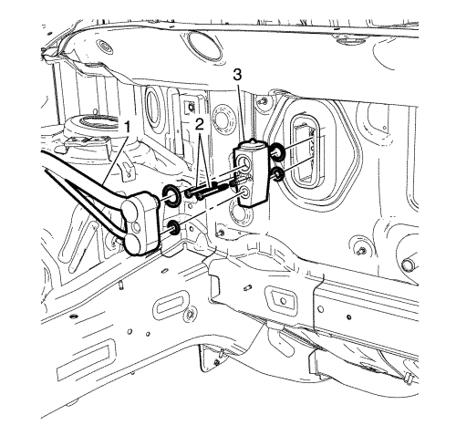

Sustitución de la válvula de expansión térmica de evaporador de aire acondicionado
Herramientas especiales
GE-39400-A Detector de fugas halógeno
Si desea informarse sobre herramientas regionales equivalentes, consultar Herramientas especiales .
Procedimiento de desmontaje
- Recubra el agente frigorífico. Consultar Recuperación y recarga del agente frigorífico .
- Desmonte los tornillos del depósito de expansión del radiador. Consultar Sustitución del depósito de expansión del radiador .
- Desmonte la tuerca del soporte de fijación del conjunto de la manguera del evaporador del A/C del lateral de la moldura del paso de rueda. Consultar Sustitución del tubo flexible del evaporador del aire acondicionado .

- Desconecte la manguera del evaporador del A/C (1) de la válvula de expansión térmica (TXV) del evaporador del A/C. Consultar Sustitución del tubo flexible del evaporador del aire acondicionado .
- Retire los 2 tornillos TXV del A/C (2).
- Retire la TXV (3).
Procedimiento de montaje
Precaución: Consulte Precaución con las fijaciones en la sección Prólogo.
Nota: Utilice juntas tóricas NUEVAS. Consultar Sustitución de la junta tórica del aire acondicionado .
- Monte la TXV del A/C (3) y los 2 tornillos de la TXV del A/C (2) y apriételos a 3,5 N·m (31 lib. pulg.).
- Conecte la manguera del evaporador del aire acondicionado (1) a la TXV del evaporador del A/C (3). Consultar Sustitución del tubo flexible del evaporador del aire acondicionado .
- Monte la tuerca del soporte de fijación del conjunto de la manguera del evaporador del A/C al lateral de la moldura del paso de rueda. Consultar Sustitución del tubo flexible del evaporador del aire acondicionado .
- Monte los tornillos del depósito de expansión del radiador. Consultar Sustitución del depósito de expansión del radiador .
- Vacíe y llene el sistema de agente frigorífico. Consultar Recuperación y recarga del agente frigorífico .
- Realice una comprobación de estanqueidad en los ajustes mediante el detector GE-39400-A.
| © Copyright Chevrolet. Reservados todos los derechos |